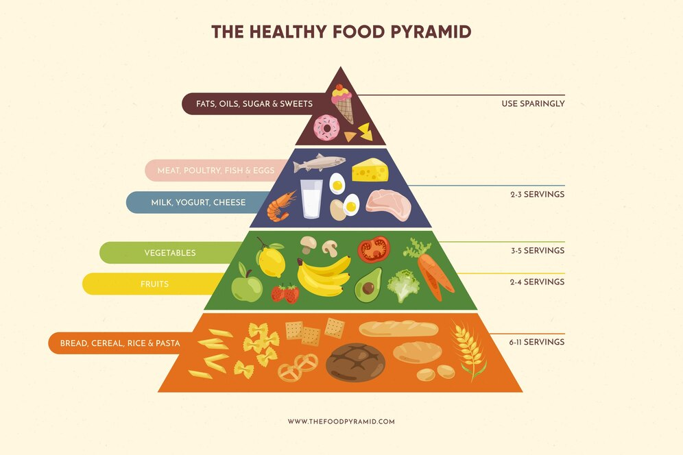
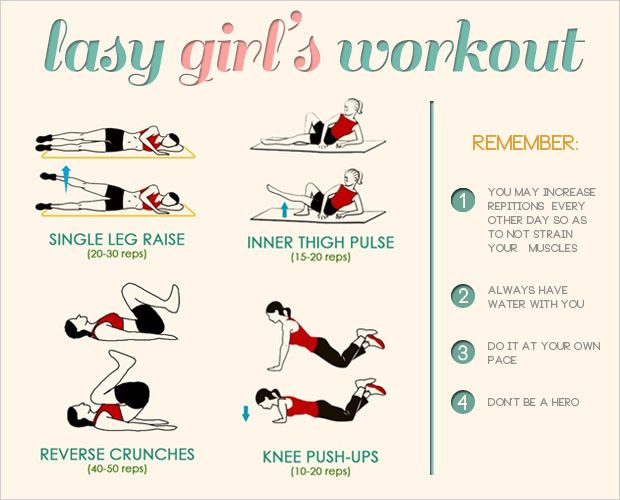
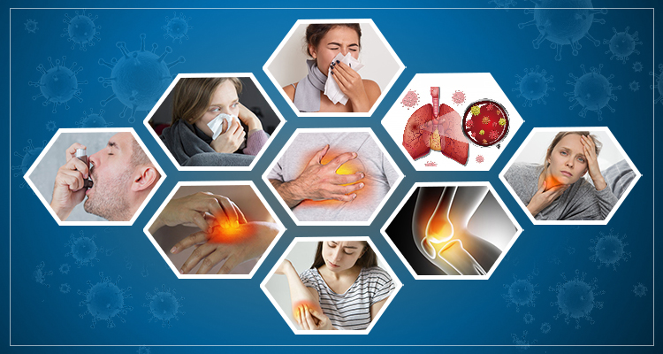

Promoting healthy eating habits and lifestyle choices for the Alpha Generation.
Nutrition Tips

Base your meals on higher fiber starchy carbohydrates.
Starchy carbohydrates should form the basis of your meals. These include potatoes, bread, rice, pasta, and cereals.
Choosing wholegrain or higher fiber versions of these foods can help you feel fuller for longer and provides essential nutrients such as fiber, B vitamins, and minerals.
Fiber is important for digestive health and can reduce the risk of certain diseases, including heart disease and type 2 diabetes.
Eat lots of fruit and vegetables.
Aim to eat at least five portions of a variety of fruit and vegetables every day.
Fruits and vegetables are low in calories and high in nutrients, vitamins, and minerals.
They also contain fiber, which helps to keep your digestive system healthy.
Eating a wide range of colors and types ensures you get a variety of nutrients.
Eat more fish, including a portion of oily fish.
Fish is a good source of protein and contains many vitamins and minerals.
Oily fish, in particular, is rich in omega-3 fatty acids, which are important for heart health.
Aim to eat at least two portions of fish a week, with at least one of them being oily fish like salmon, mackerel, or sardines.
Cut down on saturated fat and sugar.
Saturated fats can raise your blood cholesterol level, increasing the risk of heart disease.
Foods high in saturated fat include fatty meats, butter, cream, cheese, and pastries.
Sugary foods and drinks are high in calories but low in nutrients, leading to weight gain and potentially type 2 diabetes.
Limit your intake of these foods and choose healthier options like lean meats, low-fat dairy, and whole grains.
Eat less salt: no more than 6g a day for adults.
Too much salt can raise your blood pressure, which is a major risk factor for heart disease and stroke.
Adults should eat no more than 6g of salt a day, which is about a teaspoonful.
Be aware of hidden salt in processed foods and try to reduce the amount of salt you add to food when cooking.
Get active and be a healthy weight.
Regular physical activity can help you maintain a healthy weight, reduce your risk of serious diseases, and improve your mental health and mood.
Aim for at least 150 minutes of moderate aerobic activity, such as cycling or brisk walking, or 75 minutes of vigorous activity, such as running or swimming, every week.
Combine this with strength exercises at least twice a week.
Do not get thirsty.
It's important to stay hydrated by drinking plenty of fluids.
Water is the best choice, but you can also get fluids from other beverages and food.
Avoid sugary drinks and limit alcohol intake.
Drinking water before meals can also help you feel fuller and eat less.
Do not skip breakfast.
Eating a healthy breakfast can help kick-start your metabolism, prevent overeating later in the day, and provide essential nutrients for good health.
A balanced breakfast might include whole-grain cereals, low-fat milk, and fruit.
Exercise Tips

Engage in at least 30 minutes of physical activity every day.
Regular physical activity is essential for maintaining good health and preventing chronic diseases.
Aim for at least 30 minutes of moderate-intensity exercise, such as brisk walking, cycling, or swimming, most days of the week.
Make exercise a cornerstone of your daily routine to maintain optimal health and well-being.
Incorporating exercise into your daily routine can help improve your mood, energy levels, and overall quality of life.
Consistency is key, so try to schedule your workouts at the same time each day to establish a habit.
Before starting a new exercise regimen, seek advice from a qualified healthcare provider to ensure it aligns with your individual needs and health conditions.
It's important to get professional advice to avoid any potential risks and to tailor your exercise plan to your specific health needs.
Your healthcare provider can help you identify any limitations or precautions you should take.
Establish achievable fitness objectives that are specific, measurable, attainable, relevant, and time-bound (SMART goals) to stay motivated and track progress.
Setting SMART goals can help you stay focused and motivated by providing clear, achievable targets.
For example, a SMART goal might be to walk 10,000 steps a day for the next month.
Develop a well-structured workout routine that includes a variety of exercises to target different muscle groups and improve overall fitness.
A balanced workout routine should include cardiovascular exercises, strength training, flexibility exercises, and balance training.
Mixing up your workouts can prevent boredom and plateaus, and it ensures that all parts of your body are being challenged.
Prioritize correct form and technique to prevent injuries and maximize the benefits of your workouts. Consider seeking guidance from a certified fitness professional.
Proper form and technique are crucial for getting the most out of your exercises and avoiding injuries.
A fitness professional can provide personalized instruction and feedback to help you perform exercises correctly.
Pay attention to your body's cues and adjust your workouts accordingly. Avoid overtraining and take rest days when needed.
Listening to your body is important to prevent overuse injuries and burnout.
Rest days are just as important as workout days for muscle recovery and growth.
Consume adequate fluids and a balanced diet to support your body's energy levels and recovery.
Staying hydrated and eating a balanced diet can improve your performance and help your body recover from workouts.
Aim to drink water before, during, and after exercise, and eat a mix of carbohydrates, proteins, and fats to fuel your body.
Choose exercises that you genuinely enjoy to make your fitness journey more sustainable and enjoyable.
Finding activities that you look forward to can help you stick with your exercise routine long-term.
Whether it's dancing, hiking, yoga, or team sports, the best exercise is one that you'll keep doing.
Common Health Issues

Cardiovascular Diseases
Heart attack: Occurs when blood flow to the heart muscle is blocked, usually due to a blood clot.
Stroke: Happens when blood flow to the brain is interrupted or reduced, preventing brain tissue from getting oxygen and nutrients.
Hypertension: Also known as high blood pressure, it is a long-term medical condition in which the blood pressure in the arteries is persistently elevated.
Coronary artery disease: Refers to the buildup of plaque in the arteries that supply blood to the heart, leading to reduced blood flow.
Diabetes
Type 1 diabetes: An autoimmune condition where the pancreas produces little or no insulin.
Type 2 diabetes: A metabolic disorder characterized by high blood sugar levels due to insulin resistance and relative insulin deficiency.
Cancer
Breast cancer: A type of cancer that forms in the cells of the breasts.
Lung cancer: A malignant tumor that starts in the lungs and can spread to other parts of the body.
Colon cancer: Cancer of the large intestine, which can include the colon and rectum.
Prostate cancer: A form of cancer that develops in the prostate gland, a small walnut-shaped gland in males.
Mental Health Conditions
Depression: A common mental disorder characterized by persistent sadness, loss of interest, and other emotional and physical problems.
Anxiety disorders: A group of mental disorders characterized by significant feelings of anxiety and fear.
Bipolar disorder: A mental disorder characterized by periods of depression and periods of elevated mood, known as mania.
Schizophrenia: A chronic and severe mental disorder that affects how a person thinks, feels, and behaves.
Eating disorders: A group of mental disorders characterized by abnormal eating habits, such as anorexia nervosa and bulimia nervosa.
Post-traumatic stress disorder (PTSD): A mental health condition that's triggered by a terrifying event, causing symptoms such as flashbacks, nightmares, and severe anxiety.
Obsessive-compulsive disorder (OCD): A mental disorder characterized by obsessive thoughts and compulsive behaviors.
Respiratory Diseases
Asthma: A common long-term inflammatory disease of the airways, characterized by wheezing, breathlessness, chest tightness, and coughing.
Chronic obstructive pulmonary disease (COPD): A group of lung conditions that cause breathing difficulties, including emphysema and chronic bronchitis.
Pneumonia: An infection that inflames the air sacs in one or both lungs, causing symptoms such as coughing, fever, and difficulty breathing.
Tuberculosis (TB): An infectious disease that primarily affects the lungs, caused by the bacterium Mycobacterium tuberculosis.
Digestive Disorders
Gastroesophageal reflux disease (GERD): A chronic condition where acid from the stomach flows back into the esophagus, causing symptoms like heartburn.
Irritable bowel syndrome (IBS): A common disorder that affects the large intestine, causing symptoms like cramping, abdominal pain, bloating, gas, diarrhea, and constipation.
Crohn's disease and ulcerative colitis: Types of inflammatory bowel disease (IBD) that cause inflammation and ulcers in the digestive tract.
Gallstones: Hard deposits that can form in the gallbladder, causing pain and potentially leading to complications like gallbladder inflammation.
Skin Conditions
Acne: A common skin condition characterized by the appearance of pimples, whiteheads, or blackheads, often associated with hormonal changes.
Eczema: A group of conditions that cause the skin to become inflamed or irritated, leading to symptoms like redness, itching, and dryness.
Psoriasis: A chronic skin condition that causes the rapid buildup of skin cells, leading to scaling on the skin's surface.
Rosacea: A chronic skin condition that causes redness and visible blood vessels in the face, often accompanied by a burning sensation.
Infectious Diseases
Influenza (flu): A contagious respiratory illness caused by influenza viruses that infect the nose, throat, and lungs.
COVID-19: A contagious disease caused by the SARS-CoV-2 virus, leading to symptoms like fever, cough, and shortness of breath.
HIV/AIDS: A virus that attacks the immune system, leading to acquired immunodeficiency syndrome (AIDS) if not treated.
Hepatitis: Inflammation of the liver, most commonly caused by viruses, including hepatitis A, B, and C.